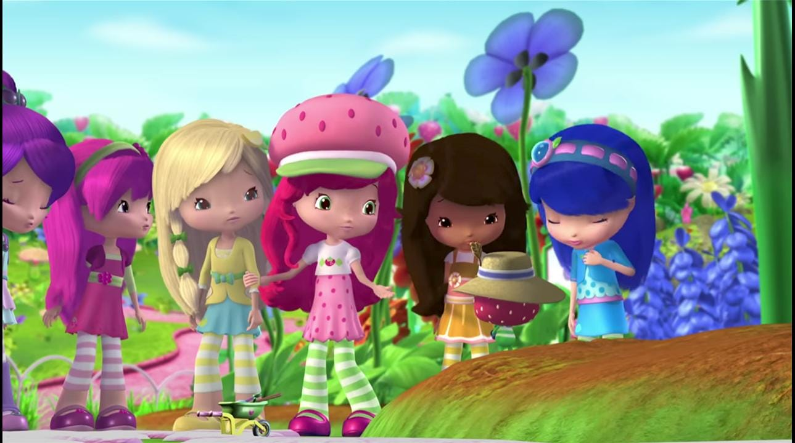
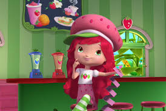

Rosita Fresita leerá un nuevo poema. Lo escribe una tarde que nadie más está en el café, excepto Cremita y Pastelito. Es una simple y dulce rima sobre la magia de pedir deseos a las estrellas fugaces.
Se sorprende al escuchar los aplausos del Sr. Cara Larga. Este le ayuda a perfeccionarlo. Luego, Rosita Fresita se da cuenta de que el Sr. Cara Larga ha cambiado completamente su poema.
 | Deseos | Soluciones |
|---|---|
| Sr.Cara Larga | Insertidumbre |
| Poema | rosita fresita |